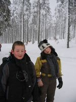
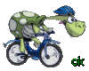
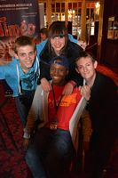
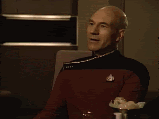

Clément
Le Caribou
Tout d'abord faisons les présentations ...
Je suis Clément Devoucoux , je suis d'origine française en region parisienne ! Je suis né sous un beau jour d'octobre 1998 c'était un jeudi ! Bref j'ai 19 ans ! J'aime beaucoup les caribous , d'où le nom du site d'ailleurs ! Eh oui car en réalité tout le monde (ou presque) m'appelle Caribou ! Pourquoi ? Parce que un jour je me suis amusé à imiter un comédien quebecois et j'ai pas trop mal réussi a faire l'accent ! Depuis mon surnom est en rapport avec l'animal emblématique du Canada ! Du coup vous pouvez choisir comment m'appeller ! Continuions ma présentation dans la section suivante...
Mon parcours scolaire
les années maternelles
En vrai y a pas grand chose a dire la dessus ... Je m'en souviens même plus ! A part ma grande section je me souviens que j'avais une maitresse qui s'appellait Brigitte ... Elle a paniqué parce que j'étais ambidextre ! Du coup passons à la suite...
Les années primaires
Bon là c'est pareil y a pas 10 millions de choses à dire a part qu'en CM2 je suis parti en classe de neige ! C'étais génial ! Enfin j'avais peur un peu ... le ski et moi on s'aimait pas trop ... Je préférais les raquettes commen le prouve la photo suivante : {kind=link}
D'ailleurs à ma droite on y voit Aurélie ! Une amie que j'ai rencontré quand j'avais 3 ans ! Bon et si on passait à la suite ...
Le collège (Centre d'Otage Laissant Les Elèves Galerer Ensemble) !
Bon ... Passons les 3 premières années en mode rapide ! Rien d'interessant ne s'y est vriament passer !
BRZZZZZZZZZZZZZZZZZZZZZZZZZZZZZZZZZZZ 
Bienvenue en 3ème ! J'ai eu une scolarité incroyable avec ces 3 zigotos a mes cotés on s'appellait les Famous People:

J'étais dans un collège un peu spécial où nous n'étions que 7 dans ma classe , et tous les
vendredi de 15h a 16h je me retrouvais tout seul avec Mr Helou , mon prof de math ! C'était cool
je comprenais tout le cours comme ca ! Puis est venu le moment du brevet ! Je me souviens de l'instant
comme si c'était hier , avec Ludivine (la seule fille sur la photo du dessus) on est descendu de l'internat
pour aller devant la salle d'exam en chantant du Plastic Bertrand alors qu'on était pas très à l'heure !
Mais bon finalement chacun de nous à eu son brevet , Lulu avec mention poil de fesse (de justesse) moi avec mention assez bien !
Passons maintenant aux choses sérieuses ! Passons au Lycée ...
{kind=link}
Le lycée (poil au nez)
Bon commençons par le commencement ! La seconde ... Une catastrophe niveau scolaire je me tapais des mauvaises
notes en veux tu en voilà ! Mais j'étais à fond dans la vie du lycée ! J'étais .... Délégué de la classe , vice président
du Conseil de Vie Lycéenne (CVL) , représentant au conseil d'administration et de tout plein d'autre conseil sur tout et n'importe quoi !
Du coup je me suis bien amusé ! Mais en fin d'année on ma demandé de choisir quel filière nous allions prendre ! Alors j'ai choisi la
STI2D ! Option SIN ! Parce que l'info et tout c'est cool ! Tout c'est passé nickel ! Félicitations à droite à gauche ... et le BAC obtenu
avec mention BIEN !

Le post bac
Ah le post bac ... Entrer dans le monde des adultes , liberté , soirées , et amourettes... OU PAS ! Et oui qui c'est qui va en prépa ? C'est bibi ! (ça m'apprendra à avoir été bon élève !) Bon on va passer vite la dessus parce que a part vous dire que c'était l'enfer j'ai pas grand chose a vous dire de plus. Alors passons plutôt au redoublement pour aller en ... BTS SNIR ! Et oui ! Et à votre avis pourquoi ce site existe ? Parce que Mr Facchin me l'à demandé ! Bon j'ai rencontré d'autres personnes incroyable ! (Vous pouvez d'ailleurs visitez leur site en cliquant sur leur lien en bas de page !). Quant à la suite , il faudra attendre le prochain épisode !